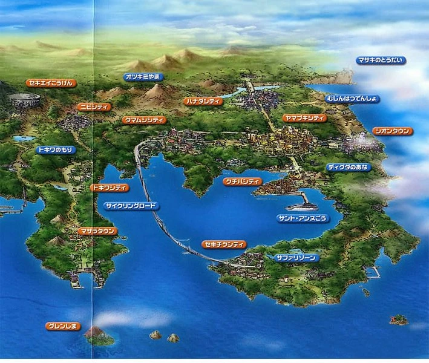

 La région de Kanto possède des paysages variés, tels que des grottes et des forêts. Cette diversité permet à de nombreux Pokémon de vivre dans ces différents habitats. Par exemple, se trouvent dans la forêt de Jade de nombreux Pokémon insecte, tandis que les Taupiqueur et Triopikeur ont creusé une grotte reliant Argenta et Carmin sur Mer pour y vivre. La centrale près d'Azuria alimente la région en énergie grâce à l'hydroélectricité. Kanto compte deux villes de taille importante. Céladopole est connue pour son centre commercial et son casino, ce dernier abritant secrètement une planque de la Team Rocket. Safrania, quant à elle, est le siège de la Sylphe SARL et c'est de cette ville que l'on peut se rendre à Doublonville par le Train Magnétique. Des villes de taille plus modeste se trouvent également à Kanto. On peut citer Lavanville, célèbre pour sa Tour Pokémon, Parmanie et son Parc Safari ou encore Argenta et son musée, ainsi que Bourg Palette, la ville d'origine du héros.
| Habitants : | 14 000 | ||||
|---|---|---|---|---|---|
| Ville : | Kanto | ||||
| Pokemon : | 151 | ||||